0. 前言
一些关于网络编程方面的问题，该怎样回答呢？
- 大家经常说的四层、七层，分别指的是什么？
- TCP 三次握手是什么，TIME_WAIT 是怎么发生的？CLOSE_WAIT 又是什么状态？
- Linux 下的
epoll解决的是什么问题？如何使用epoll写出高性能的网络程序？ - 什么是网络事件驱动模型？
Reactor模式又是什么？
这些问题看似简单，但想做到完全理解却并不容易。很多时候我们希望尽可能详尽地学习网络编程，但难以理清脉络。学习高性能网络编程，需要掌握两个核心要点：第一就是理解网络协议，并在这个基础上和操作系统内核配合，感知各种网络 I/O 事件；第二就是学会使用线程处理并发。本文会从实践出发，从问题的角度对知识点进行阐述。
1. 网络编程入门
1.1 基本概念
1.1.1 客户端 - 服务器网络模型
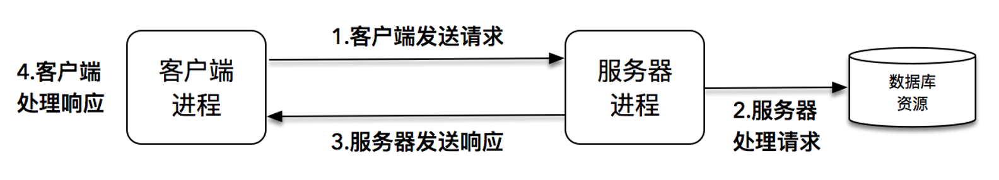
- 当一个客户端需要服务时，它会向服务器端发送一个请求。这个请求是按照双方约定的格式来发送的，以便保证服务器端是可以理解的
- 服务器端收到这个请求后，会根据双方约定的格式解释它，并且以合适的方式进行操作
- 服务器端完成处理请求之后，会给客户端发送一个响应，然后等待客户端的下一步操作
- 客户端收到响应并进行处理
区别出客户端和服务器，本质上是因为二者编程模型是不同的。需要强调的是，无论是客户端，还是服务器端，它们运行的单位都是进程，而不是机器
1.1.2 IP和端口
IP地址
在 TCP/IP 协议栈中，IP 用来表示网络世界的地址。在一台计算机上是可以同时存在多个连接的，区分出不同的连接就需要用到端口这个概念。计算机的 IP 地址是唯一的，每个连接的端口号是不同的。
端口号是一个 16 位的整数，最多为 65536
端口
当一个客户端发起连接请求时，客户端的端口是由操作系统内核临时分配的，称为临时端口，服务器端的端口通常是一个众所周知的端口Well Known Ports。一个连接可以通过客户端 - 服务器端的 IP 和端口唯一确定，这叫做套接字对，按照（客户端地址、客户端端口、服务端地址、服务端端口）这样的四元组表示：
（clientaddr:clientport, serveraddr: serverport)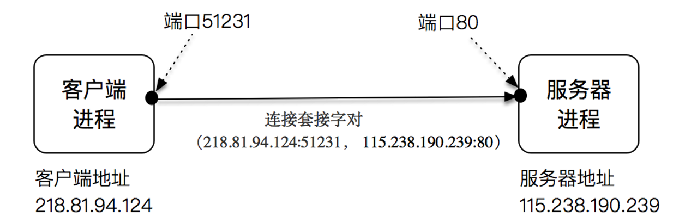
1.1.3 子网掩码
在网络 IP 划分的时候，我们需要区分两个概念：
- 网络
network：表示这组 IP 共同的部分，比如在 192.168.1.1~192.168.1.255 这个区间里，它们共同的部分是 192.168.1.0 - 主机
host：表示这组 IP 不同的部分，上面例子中 1~255 就是不同的那些部分，表示有 255 个可用的不同 IP
例如 IPv4 地址，192.0.2.12，以说前面三个 bytes 是子网，最后一个 byte 是 host，或者说 host 为 8 位，子网掩码为 192.0.2.0/24（255.255.255.0）
网络地址位数由子网掩码Netmask决定，将 IP 地址与子网掩码进行位与操作，就能得到网络的值。
注意：子网掩码的格式永远都是二进制格式：前面是一连串的 1，后面跟着一连串的 0
如 IP 192.0.2.12，使用子网掩码255.255.255.0时，网络就会是 192.0.2.12 与 255.255.255.0 得到的值：192.0.2.0
255.192.0.0 这样的子网掩码无法直观地知道有多少个 1，多少个 0，后来有了新的表示方法： IP /网络的位数
如 IP 192.0.2.12/30：有 30 个 1， 2 个 0，主机个数为 4
1.1.4 保留网段和端口
保留网段
国际标准组织在 IPv4 地址空间里面，专门划出了一些网段，这些网段不会用做公网上的 IP，而是仅仅保留做内部使用，我们把这些地址称作保留网段。
下表是三个保留网段，其可以容纳的计算机主机个数分别是 16777216 个、1048576 个和 65536 个

保留端口
保留端口就是大家约定俗成的，已经被对应服务广为使用的端口，比如 ftp 的 21 端口，ssh 的 22 端口，http 的 80 端口等。
glibc 定义的保留端口：
/* Standard well-known ports. */
enum
{
IPPORT_ECHO = 7, /* Echo service. */
IPPORT_DISCARD = 9, /* Discard transmissions service. */
IPPORT_SYSTAT = 11, /* System status service. */
IPPORT_DAYTIME = 13, /* Time of day service. */
IPPORT_NETSTAT = 15, /* Network status service. */
IPPORT_FTP = 21, /* File Transfer Protocol. */
IPPORT_TELNET = 23, /* Telnet protocol. */
IPPORT_SMTP = 25, /* Simple Mail Transfer Protocol. */
IPPORT_TIMESERVER = 37, /* Timeserver service. */
IPPORT_NAMESERVER = 42, /* Domain Name Service. */
IPPORT_WHOIS = 43, /* Internet Whois service. */
IPPORT_MTP = 57,
IPPORT_TFTP = 69, /* Trivial File Transfer Protocol. */
IPPORT_RJE = 77,
IPPORT_FINGER = 79, /* Finger service. */
IPPORT_TTYLINK = 87,
IPPORT_SUPDUP = 95, /* SUPDUP protocol. */
IPPORT_EXECSERVER = 512, /* execd service. */
IPPORT_LOGINSERVER = 513, /* rlogind service. */
IPPORT_CMDSERVER = 514,
IPPORT_EFSSERVER = 520,
/* UDP ports. */
IPPORT_BIFFUDP = 512,
IPPORT_WHOSERVER = 513,
IPPORT_ROUTESERVER = 520,
/* Ports less than this value are reserved for privileged processes. */
IPPORT_RESERVED = 1024,
/* Ports greater this value are reserved for (non-privileged) servers. */
IPPORT_USERRESERVED = 5000
1.1.5 域名系统
IP 协议的职责是网际互连，它在 MAC 层之上，使用 IP 地址把 MAC 编号转换成了四位数字，对物理网卡的 MAC 地址做了一层抽象，只要每个小网络在 IP 地址这个概念上达成一致，不管在 MAC 层有多大的差异，都可以接入 TCP/IP 协议栈，终汇合进整个互联网。
但接入互联网的计算机越来越多，IP 地址的缺点也就暴露出来了，数字形式的地址对于人类来说却既难以记忆又难以输入，于是域名系统Domain Name System出现了，用有意义的名字来作为 IP 地址的等价替代，在 IP 地址之上再来一次抽象。
域名的形式
在 DNS 中，域名Domain Name又称为主机名Host，全球域名按照从大到小的结构，形成了一棵树状结构。实际访问一个域名时，是从最底层开始写起。域名用 . 分隔成多个单词，级别从左到右逐级升高，最右边的被称为顶级域名。
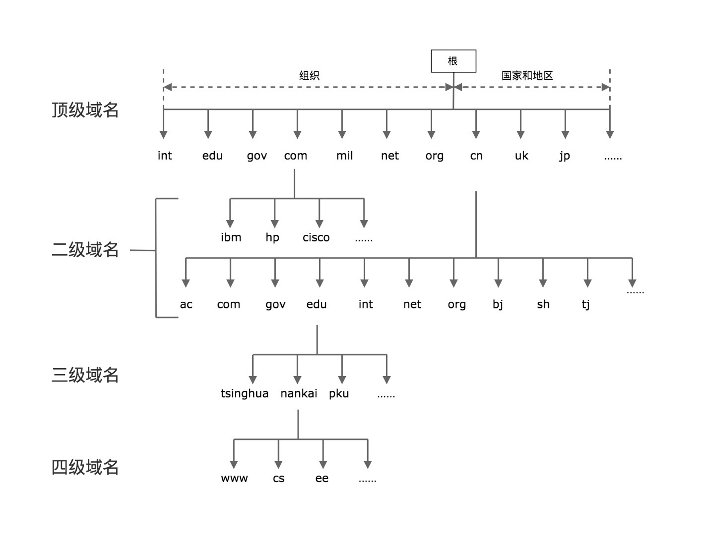
域名不仅能够代替 IP 地址，还有许多其他的用途。在Web服务器中，域名可以用来标识虚拟主机，决定由哪个虚拟主机来对外提供服务，比如在 Nginx 里就会使用server_name指令：
server {
listen 80; # 监听 80 端口
server_name a.test.com; # 主机名是 a.test.com
...
}域名本质上是个名字空间系统，使用多级域名就可以划分出不同的国家、地区、组织、公司、部门，每个域名都是独一无二的，可以作为一种身份的标识。因为这个特性，域名也被扩展到了其他应用领域，比如 Java 的包机制采用域名作为命名空间。 XML 里使用 URI 作为名字空间，也间接使用了域名。
域名的解析
IP 地址必须转换成 MAC 地址才能访问主机，想要使用 TCP/IP 协议来通信要使用 IP 地址，所以需要把域名做一个转换，映射到它的真实 IP，这就是域名解析。全世界有几亿站点，几十亿网民，而每天网络上的 HTTP 流量更是天文数字。这些请求绝大多数都是基于域名来访问网站的，所以 DNS 就成了互联网的重要基础设施，必须要保证域名解析稳定可靠、快速高效。
DNS 的核心系统是一个三层的树状、分布式服务，基本对应域名的结构：
- 根域名服务器
Root DNS Server：管理顶级域名服务器，返回“com、net、cn等顶级域名服务器的 IP 地址 - 顶级域名服务器
Top-level DNS Server：管理各自域名下的权威域名服务器，比如com顶级域名服务器可以返回apple.com域名服务器的 IP 地址 - 权威域名服务器
Authoritative DNS Server：管理自己域名下主机的 IP 地址，比如apple.com权威域名服务器可以返回www.apple.com的 IP 地址
根域名服务器是关键，它必须是众所周知的。 目前全世界共有 13 组根域名服务器，又有数百台的镜像，保证一定能够被访问到。有了这个系统以后，任何一个域名都可以在这个树形结构里从顶至下进行查询，就好像是把域名从右到左顺序走了一遍，终就获得了域名对应的 IP 地址。
- 目前全世界有 13 组根 DNS 服务器，因为DNS协议还有UDP协议里包大小的限制，只有512字节，再除以DNS记录长度，最多15组，再去掉buffer
- HTTP 协议中并没有明确要求必须使用 DNS，但实际上为了方便访问互联网上的 Web 服务器，通常都会使用 DNS 来定位或标记主机名，间接地把 DNS 与 HTTP 绑在了一起
在核心 DNS 系统之外，还有两种手段用来减轻域名解析的压力，并且能够更快地获取结果，基本思路就是缓存
- 大公司、网络运行商都会建立自己的 DNS 服务器，作为用户 DNS 查询的代理，代替用户访问核心 DNS 系统。这些服务器被称为非权威域名服务器，可以缓存之前的查询结果，如果已经有了记录，就无需再向根服务器发起查询，直接返回对应的 IP 地址。这些 DNS 服务器的数量要比核心系统的服务器多很多，而且大多部署在离用户很近的地方。比较知名的 DNS 有 Google 的8.8.8.8，Microsoft 的4.2.2.1，还有 CloudFlare 的1.1.1.1等。
- 操作系统里也会对 DNS 解析结果做缓存，直接在操作系统里就可以拿到 IP 地址。另外，操作系统里还有一个特殊的主机映射文件，通常是一个可编辑的文本，在 Linux 里是
/etc/hosts，在 Windows 里是C:\WINDOWS\system32\drivers\etc\hosts，如果操作系统在缓存里找不到 DNS 记录，就会找这个文件。
总结：DNS 是一个树状的分布式查询系统，为了提高查询效率，外围有多级的缓存
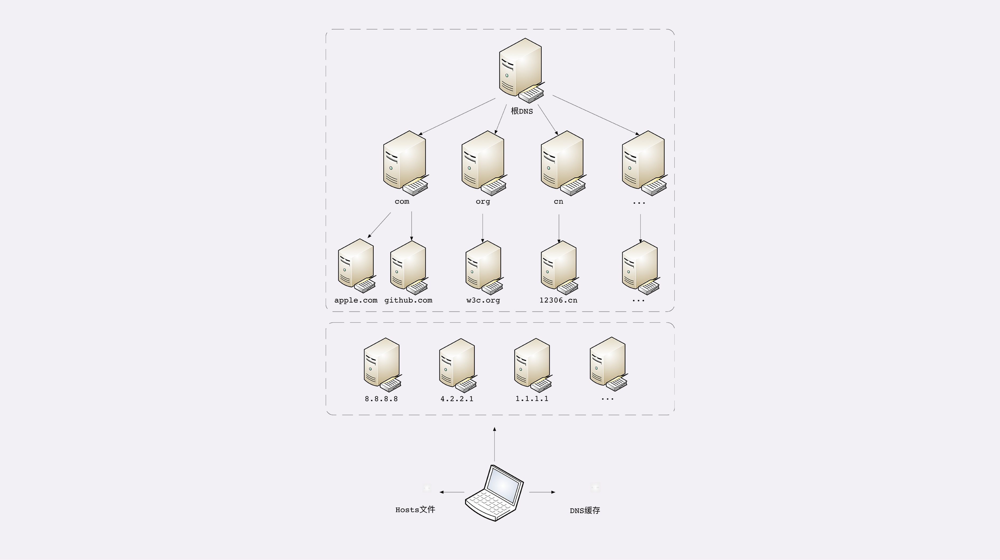
负载均衡
重定向，对外服务的域名不变，而主机的 IP 地址变动。当主机有情况需要下线或迁移时，可以更改 DNS 记录让域名指向其他机器。
基于域名实现的负载均衡
域名解析可以返回多个 IP 地址，客户端收到多个 IP 地址后，使用轮询算法依次向服务器发起请求，实现负载均衡。
域名解析可以配置内部的策略，返回离客户端近的主机或者当前服务质量好的主机，在 DNS 端把请求分发到不同的服务器。
1.1.6 数据报和字节流
TCP又被叫做字节流套接字Stream Socket，UDP 又被叫做数据报套接字Datagram Socket，一般以SOCK_STREAM与SOCK_DGRAM分别表示 TCP 和 UDP 套接字。Datagram Sockets 有时称为无连接的 sockets connectionless sockets
字节流套接字是可靠的，双向连接的通讯串流。比如以1-2-3的顺序将字节流输出到套接字上，它们在另一端一定会以1-2-3的顺序抵达，且不会出错。TCP 通过诸如连接管理，拥塞控制，数据流与窗口管理，超时和重传等一系列精巧而详细的设计，提供了高质量的端到端的通信方式。
数据报套接字也可以做到更高的可靠性，只不过这种可靠性，需要应用程序进行设计处理，比如对报文进行编号，设计 Request-Ack 机制，再加上重传等，在一定程度上可以达到更为高可靠的 UDP 程序。
1.1.7 其他
什么是网络
- 在计算机领域中，网络是信息传输、接收、共享的虚拟平台
- 通过它把各个点、面、体的信息联系到一起，可以进行数据传递，从而实现这些资源的共享
什么是网络编程
- 大方面说就是对信息的发送到接受
- 通过操作相应API调度计算机硬件资源，并利用传输管道（网线）进行数据交换的过程
1.2 网络分层
网络为什么要分层？因为复杂的程序都要分层。网络包的格式很复杂，处理网络包的程序也很复杂。复杂的程序都要分层，这是程序设计的要求。比如，复杂的电商还会分数据库层、缓存层、Compose 层、Controller 层和接入层，每一层专注做本层的事情。
1.2.1 TCP/IP 网络分层模型
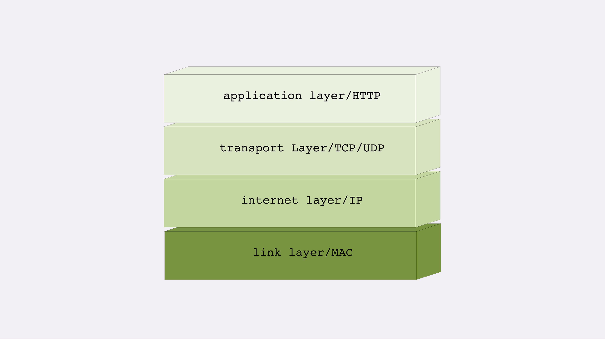
第一层：链接层link layer，负责在以太网、WiFi 这样的底层网络上发送原始数据包，工作在网卡这个层次，使用 MAC 地址来标记网络上的设备，所以有时也叫 MAC 层。
第二层：网际层或网络互连层internet layer，IP 协议就处在这一层，可以在链接层的基础上，用 IP 地址取代 MAC 地址，把许许多多的局域网、广域网连接成一个虚拟的巨大网络，在这个网络里找设备时只需要把 IP 地址翻译成 MAC 地址。
第三层：传输层transport layer，这个层次协议的职责是保证数据在 IP 地址标记的两点之间可靠地传输，是 TCP 协议工作的层次。
第四层：应用层application layer，有各种面向具体应用的协议。如 Telnet、SSH、FTP、SMTP、HTTP 等。
MAC 层的传输单位是帧
frame，IP 层的传输单位是包packet，TCP 层的传输单位是段segment，HTTP 的传输单位则是消息或报文message。但这些名词并没有什么本质的区分，可以统称为数据包
1.2.2 OSI 网络分层模型
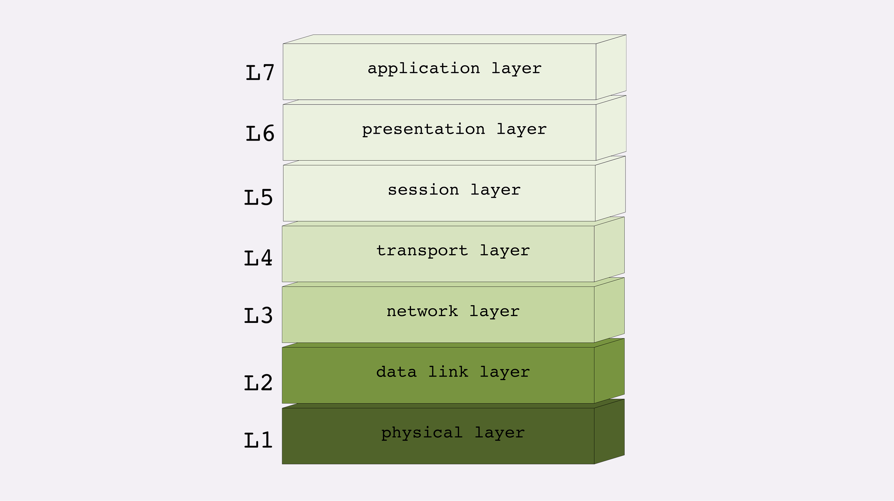
第一层：物理层，网络的物理形式，例如电缆、光纤、网卡、集线器等等
第二层：数据链路层，它基本相当于 TCP/IP 的链接层
第三层：网络层，相当于 TCP/IP 里的网际层
第四层：传输层，相当于 TCP/IP 里的传输层
第五层：会话层，维护网络中的连接状态，即保持会话和同步
第六层：表示层，把数据转换为合适、可理解的语法和语义
第七层：应用层，面向具体的应用传输数据
TCP/IP 是一个纯软件的栈，没有网络应有的最根基的电缆、网卡等物理设备的位置。而 OSI 则补足了这个缺失，在理论层面上描述网络更加完整。OSI 为每一层标记了明确了编号，最底层是一层，最上层是七层，而 TCP/IP 的层次从来只有名字而没有编号。
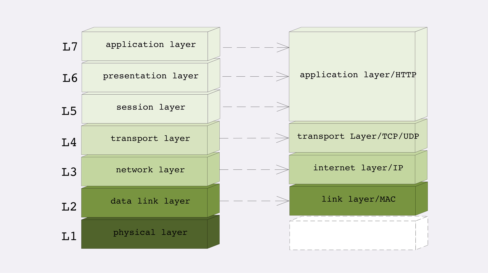
OSI 的分层模型在四层以上分的太细，而 TCP/IP 实际应用时的会话管理、编码转换、压缩等和具体应用经常联系的很紧密，很难分开。
四层负载均衡：工作在传输层上，基于 TCP/IP 协议的特性，例如 IP 地址、端口号等实现对后端服务器的负载均衡
七层负载均衡：工作在应用层上，看到的是 HTTP 协议，解析 HTTP 报文里的 URI、主机名、资源类型等数据，再用适当的策略转发给后端服务器
三层路由：设备工作在ip层，报文经过有路由功能的设备时，设备分析报文中的头部信息，拿到ip地址，根据网段范围，进行本地转发或选择下一个网关
二层转发：设备工作在链路层，帧在经过交换机设备时，检查帧的头部信息，拿到目标mac地址，进行本地转发和广播
1.3 Socket套接字
1.3.1 socket 是什么？
socket 中文翻译为套接字，有时也叫套接口。这个单词的原意是“插口”“插槽”， 在网络编程中寓意是可以通过插口接入的方式，快速完成网络连接和数据收发。socket也可以看做是对物理世界的直接映射。

右侧的图显示的是服务器端初始化的过程：首先初始化 socket，之后需要执行 bind 函数，将自己的服务能力绑定在一个固定的地址和端口上，紧接着执行 listen 操作，将原先的 socket 转化为服务端的 socket，服务端最后阻塞在 accept 上，此时，服务器端已经准备就绪，等待客户端的请求。
客户端需要先初始化 socket，再执行 connect 向服务器端的地址和端口发起连接请求。这个过程就是TCP 三次握手Three-way Handshake。三次握手完成，客户端和服务器端建立连接，就进入了数据传输过程。一旦连接建立，数据的传输就不再是单向的，而是双向的，这是 TCP 的一个显著特性。
当客户端完成和服务器端的交互后，需要和服务器端断开连接时，就会执行 close 函数，操作系统内核此时会通过原先的连接链路向服务器端发送一个 FIN 包，服务器收到之后执行被动关闭，这时候整个链路处于半关闭状态，此后服务器端也会执行 close 函数，整个链路才会真正关闭。半关闭的状态下，发起 close 请求的一方在没有收到对方 FIN 包之前都认为连接是正常的，而在全关闭的状态下，双方都感知连接已经关闭。
具体来说，客户端进程向操作系统内核发起
write字节流写操作，内核协议栈将字节流通过网络设备传输到服务器端，服务器端从内核得到信息，将字节流从内核读入到进程中，并开始业务逻辑的处理，完成之后，服务器端再将得到的结果以同样的方式写给客户端。
以上所有的操作，都是通过 socket 来完成的。无论是 connect还是 accept，或者 read/write 操作等，socket 是用来建立连接，传输数据的唯一途径。
1.3.2 直观解释*
可以把整个 TCP 的网络交互和数据传输想象成打电话，socket 就好像是手里的电话机，connect 就好比拿着电话机拨号，而服务器端的 bind 就好比是将电话号码和我们家里的电话机绑定，这样别人就可以用这个号码找到你，listen 就好似接上线后听到了响铃，accept 就好比是被叫的一方拿起电话开始应答。至此，三次握手就完成了，连接建立完毕。
接下来，拨打电话的人开始说话：“你好。”这时就进入了 write，接收电话的人听到的过程可以想象成 read（听到并读出数据），并且开始应答，双方就进入了 read/write 的数据传输过程。
最后，拨打电话的人完成了此次交流，挂上电话，对应的操作可以理解为 close，接听电话的人知道对方已挂机，也挂上电话，也是一次 close。
在整个电话交流过程中，电话是我们可以和外面通信的设备，对应到网络编程的世界里，socket 也是我们可以和外界进行网络通信的途径。
1.3.3 socket发展历史*
socket 是加州大学伯克利分校的研究人员在 20 世纪 80 年代早期提出的，所以也被叫做伯克利套接字。研究者们设想用 socket 的概念屏蔽掉底层协议栈的差别。第一版实现 socket 的就是 TCP/IP 协议，最早是在 BSD 4.2 Unix 内核上实现了 socket。
很快人们就发现这么一个概念带来了网络编程的便利，于是有更多人也接触到了 socket 的概念。Linux 作为 Unix 系统的一个开源实现，很早就从头开发实现了 TCP/IP 协议，伴随着 socket 的成功，Windows 也引入了 socket 的概念。于是在今天的世界里，socket 成为网络互联互通的标准。
1.3.4 套接字地址格式
在使用套接字时，首先要解决通信双方寻址的问题，我们需要套接字的地址建立连接。下面是套接字的通用地址结构（适用于多种地址族）
/* POSIX.1g 规范规定了地址族为 2 字节的值. */
typedef unsigned short int sa_family_t;
/* 描述通用套接字地址 */
struct sockaddr{
sa_family_t sa_family; /* 地址族. 16-bit*/
char sa_data[14]; /* 具体的地址值 112-bit */
};在这个结构体里第一个字段是地址族，表示使用什么样的方式对地址进行解释和保存。地址族在 glibc 里的定义非常多，常用的有：
AF_LOCAL：表示的是本地地址，对应的是Unix套接字，这种情况一般用于本地socket通信，很多情况下也可以写成AF_UNIX、AF_FILEAF_INET：因特网使用的 IPv4 地址AF_INET6：因特网使用的 IPv6 地址
AF_ 含义是 Address Family，很多情况下也会看到以 PF_ 表示的宏，含义是 Protocol Family（协议族）。用 AF_xxx 这样的值来初始化 socket 地址，用 PF_xxx 这样的值来初始化 socket。
在 <sys/socket.h> 头文件中可以看到这两个值是一一对应的。
/* 各种地址族的宏定义 */
#define AF_UNSPEC PF_UNSPEC
#define AF_LOCAL PF_LOCAL
#define AF_UNIX PF_UNIX
#define AF_FILE PF_FILE
#define AF_INET PF_INET
#define AF_AX25 PF_AX25
#define AF_IPX PF_IPX
#define AF_APPLETALK PF_APPLETALK
#define AF_NETROM PF_NETROM
#define AF_BRIDGE PF_BRIDGE
#define AF_ATMPVC PF_ATMPVC
#define AF_X25 PF_X25
#define AF_INET6 PF_INET6
IPv4 套接字格式地址*
/* IPV4 套接字地址，32bit 值. */
typedef uint32_t in_addr_t;
struct in_addr
{
in_addr_t s_addr;
};
/* 描述 IPV4 的套接字地址格式 */
struct sockaddr_in
{
sa_family_t sin_family; /* 16-bit */
in_port_t sin_port; /* 端口口 16-bit*/
struct in_addr sin_addr; /* Internet address. 32-bit */
/* 这里仅仅用作占位符，不做实际用处 */
unsigned char sin_zero[8];
};sockaddr_in与 sockaddr 一样，都有一个 16-bit 的 sin_family 字段，对于 IPv4 来说这个值就是 AF_INET。端口号最多是 16-bit，最大支持 $2^{16}$= 65536，支持寻址的端口号最多就是 65535。
实际的 IPv4 地址是一个 32-bit 的字段，最多支持的地址数就是$2^{32}$，大约是 42 亿，但随着互联网发展，全球接入的设备越来越多，地址渐渐显得不太够用了。
IPv6 套接字地址格式*
struct sockaddr_in6
{
sa_family_t sin6_family; /* 16-bit */
in_port_t sin6_port; /* 传输端口号 # 16-bit */
uint32_t sin6_flowinfo; /* IPv6 流控信息 32-bit*/
struct in6_addr sin6_addr; /* IPv6 地址 128-bit */
uint32_t sin6_scope_id; /* IPv6 域 ID 32-bit */
};整个结构体长度是 28 个字节，地址族是 AF_INET6，端口同 IPv4 地址一样，关键的地址从 32 位升级到 128 位，完全解决了寻址数字不够的问题。（其中流控信息和域 IP 这两个字段，一个在 glibc 的官网上没出现，另一个是当前未使用的字段）
无论 IPv4 还是 IPv6 的地址格式都是因特网套接字的格式，还有一种本地套接字格式，用来做为本地进程间的通信，即 AF_LOCAL
struct sockaddr_un {
unsigned short sun_family; /* 固定为 AF_LOCAL */
char sun_path[108]; /* 路径名 */
};为什么本地套接字格式不需要端口号，而 IPv4 和 IPv6 套接字格式却需要端口号呢？
一切皆文件，socket也是文件。socket基于文件操作，因此只需要根据文件路径便可区分，不需要使用端口。也正因如此，IPv4 和 IPv6 套接字地址结构的长度是固定的，而本地地址是可变的。
套接字地址格式比较
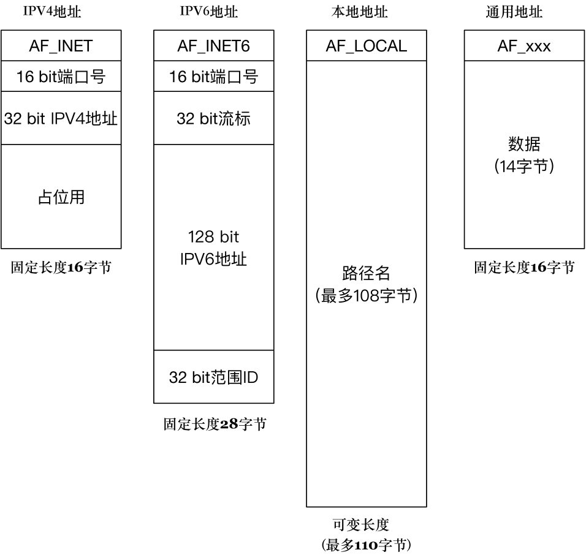
1.4 TCP建立连接
1.4.1 服务端准备连接
创建套接字
要创建一个可用的套接字，需要使用下面的函数：
int socket(int domain, int type, int protocol)domain 指 PF_INET、PF_INET6 、 PF_LOCAL 等，表示什么样的套接字
type 可用的值：
SOCK_STREAM: 表示字节流，对应TCPSOCK_DGRAM： 表示数据报，对应UDPSOCK_RAW: 表示原始套接字
protocol 原本是用来指定通信协议的，但现在基本废弃。因为协议已经通过前面两个参数指定完成。目前一般写成 0 即可。
bind
创建出来的套接字如果需要被使用，就需要调用 bind 函数把套接字和套接字地址绑定，调用 bind 函数的方式如下：
bind(int fd, sockaddr * addr, socklen_t len)sockaddr * addr通用地址格式，但是实际上传入的参数可能是 IPv4、IPv6 或者本地套接字格式。
len 字段表示的就是传入的地址长度，是一个可变值。bind 函数会根据 len 字段判断传入的参数 addr 该怎么解析。
BSD 设计套接字的时候 C 语言还没有
void *的支持，所以 BSD 的设计者们设计了通用地址格式来作为支持bind和accept等这些函数的参数。对使用者来说，每次需要将 IPv4、IPv6 或者本地套接字格式转化为通用套接字格式。
设置 bind 时对地址和端口可以有多种处理方式：
把地址设置成本机 IP 地址，相当于告诉系统内核仅对目标 IP 是本机 IP 地址的包进行处理。对部署前 IP 地址不确定的问题，可以利用通配地址的能力帮助解决。比如一台机器有两块网卡，那么向这两个 IP 请求的请求包都会被应用程序处理。
IPv4 地址使用 INADDR_ANY 、 IPv6使用 IN6ADDR_ANY 来完成通配地址的设置。
struct sockaddr_in name;
name.sin_addr.s_addr = htonl (INADDR_ANY); /* IPV4 通配地址 */
如果把端口设置成 0，就相当于把端口的选择权交给操作系统内核来处理，操作系统内核会根据一定的算法选择一个空闲的端口，完成套接字的绑定。这在服务器端不常使用，一般来说服务器端的程序要绑定到一个众所周知的端口上。
一个初始化 IPv4 TCP 套接字的例子:
#include <stdio.h>
#include <stdlib.h>
#include <sys/socket.h>
#include <netinet/in.h>
int make_socket (uint16_t port)
{
int sock;
struct sockaddr_in name;
/* 创建字节流类型的 IPV4 socket. */
sock = socket (PF_INET, SOCK_STREAM, 0);
if (sock < 0)
{
perror ("socket");
exit (EXIT_FAILURE);
}
/* 绑定到 port 和 ip. */
name.sin_family = AF_INET; /* IPV4 */
name.sin_port = htons (port); /* 指定端口 */
name.sin_addr.s_addr = htonl (INADDR_ANY); /* 通配地址 */
/* 把 IPV4 地址转换成通用地址格式，同时传递长度 */
if (bind (sock, (struct sockaddr *) &name, sizeof (name)) < 0)
{
perror ("bind");
exit (EXIT_FAILURE);
}
return sock
}
listen
初始化创建的套接字其目的是主动发起请求（通过调用 connect 函数）。而通过 listen 函数可以将原来的”主动”套接字转换为”被动”套接字，告诉操作系统内核等待用户请求，内核会为此做好接收用户请求的准备，比如完成连接队列。
listen 函数的原型：
int listen (int socketfd, int backlog) socketfd 为套接字描述符
backlog为未完成连接队列的大小，这个参数的大小决定了可以接收的并发数目。这个参数越大，并发数目理论上也会越大。但是参数过大也会占用过多的系统资源，一些系统如 Linux 不允许修改这个参数。
accept
当客户端的连接请求到达时，服务器端应答成功，连接建立，这时操作系统内核要把这个事件通知到应用程序，让应用程序感知到这个连接。accept 函数的作用就是连接建立之后，操作系统内核和应用程序之间的桥梁。
accept 函数原型是：
int accept(int listensockfd, struct sockaddr *cliaddr, socklen_t *addrlen) listensockfd 是套接字，可以称为 listen 套接字，因为这就是前面通过 bind，listen 一系列操作而得到的套接字。
返回值有两个部分，第一个部分 cliadd 是通过指针方式获取的客户端的地址，addrlen 告诉地址的大小；另一部分是函数的返回值，是一个全新的描述字，代表了与客户端的连接。
注意：有两个套接字描述字，第一个是监听套接字描述字 listensockfd，它是作为输入参数存在；第二个是返回的已连接套接字描述字。
为什么要把两个套接字分开呢？
网络程序的一个重要特征是并发处理，不可能一个应用程序运行之后只能服务一个客户
监听套接字一直都存在，直到这个监听套接字关闭。一个客户和服务器连接成功，完成了 TCP 三次握手，操作系统内核就为其生成一个已连接套接字，让应用服务器使用这个已连接套接字和客户进行通信处理。如果服务器完成了对这个客户的服务，关闭的就是已连接套接字，这样就完成了 TCP 连接的释放。这时候释放的只是这一个客户连接。最重要的是，监听套接字一直都处于监听状态，等待新的客户请求到达并服务。
1.4.2 客户端发起连接
第一步建立一个套接字，方法和前面一样，客户端调用 connect 向服务端发起请求。
connect
客户端和服务器端的连接建立是通过 connect 函数完成的。 connect 的构建函数：
int connect(int sockfd, const struct sockaddr *servaddr, socklen_t addrlen)
sockfd 是连接套接字，通过 socket 函数创建。 servaddr 和 addrlen 分别代表指向套接字地址结构的指针和该结构的大小。套接字地址结构必须含有服务器的 IP 地址和端口号。
在调用 connect 前不是必须调用 bind 函数，因为如果需要的话，内核会确定源 IP 地址，并按照一定的算法选择一个临时端口作为源端口。
如果是 TCP 套接字，那么调用 connect 函数将激发 TCP 的三次握手过程，而且仅在连接建立成功或出错时才返回。
补充：
出错返回可能有以下几种情况：
- 三次握手无法建立，客户端发出的
SYN包没有任何响应，返回TIMEOUT错误。这种情况比较常见的原因是对应的服务端 IP 写错。 - 客户端收到了
RST（复位）回答，这时候客户端会立即返回CONNECTION REFUSED错误。这种情况比较常见于客户端发送连接请求时的请求端口写错，因为RST是 TCP 在发生错误时发送的一种 TCP 分节。（产生 RST 的三个条件是：目的地为某端口的 SYN 到达，然而该端口上没有正在监听的服务器；TCP 想取消一个已有连接；TCP 接收到一个根本不存在的连接上的分节） - 客户发出的 SYN 包在网络上引起了
destination unreachable，目的不可达的错误。这种情况比较常见的原因是客户端和服务器端路由不通。
根据不同的返回值可以做进一步的排查。
1.4.3 TCP 三次握手的解读
下面结合服务端和客户端连接的主要函数讲解 TCP 三次握手的过程。
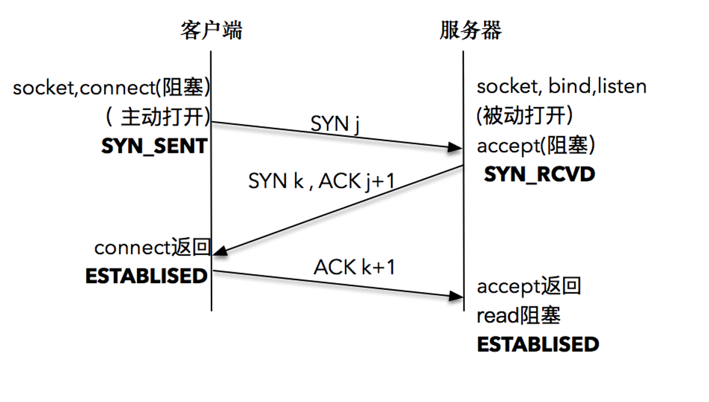
服务端通过 socket、bind 和 listen 完成了被动套接字的准备工作，然后调用 accept，就会阻塞在这里，等待客户端的连接
客户端通过 socket 和 connect 函数调用之后也会阻塞。接下来是操作系统内核网络协议栈工作，具体的过程：
- 客户端的协议栈向服务器端发送了 SYN 包，并告诉服务器端当前发送序列号
j，客户端进入SYNC_SENT状态 - 服务器端的协议栈收到包之后进行 ACK 应答，应答的值为
j+1，表示对 SYN 包 j 的确认，同时服务器也发送一个 SYN 包，告诉客户端当前我的发送序列号为k，服务器端进入SYNC_RCVD状态 - 客户端协议栈收到 ACK 之后，应用程序从
connect调用返回，表示客户端到服务器端的单向连接建立成功，客户端的状态为 ESTABLISHED，同时客户端协议栈也会对服务器端的 SYN 包进行应答，应答数据为k+1 - 应答包到达服务器端后，服务器端协议栈使得
accept阻塞调用返回，这个时候服务器端到客户端的单向连接也建立成功，服务器端也进入ESTABLISHED状态
形象的比喻：有 A 和 B 想进行通话
- A 先对 B 说：“喂，你在么？我在的，我的口令是 j ”
- B 收到之后大声回答：“我收到你的口令 j 并准备好了，你准备好了吗？我的口令是 k ”
- A 收到之后也大声回答：“我收到你的口令 k 并准备好了，我们开始吧 ”
信道不可靠，但是通信双发需要就某个问题达成一致。而要解决这个问题, 无论在消息中包含什么信息，三次通信是理论上的最小值
1.5 TCP Socket进行读写
1.5.1 发送数据
发送数据时常用的有三个函数 write、send 和 sendmsg，每个函数都是单独使用的，使用的场景略有不同
ssize_t write (int socketfd, const void *buffer, size_t size)
ssize_t send (int socketfd, const void *buffer, size_t size, int flags)
ssize_t sendmsg(int sockfd, const struct msghdr *msg, int flags)第一个函数是常见的文件写函数，如果把 socketfd 换成文件描述符，就是普通的文件写入。
第二个函数是想指定选项，发送带外数据时使用。带外数据，是一种基于 TCP 协议的紧急数据，用于客户端 - 服务器在特定场景下的紧急处理。
第三个函数是想指定多重缓冲区传输数据时使用，以结构体 msghdr 的方式发送数据。
在套接字描述符上调用 write 函数，和在普通文件描述符上调用 write 函数两者的表现形式是一样（都是通过描述符句柄写入指定的数据），但内在的区别不一样。
- 对于普通文件描述符而言，一个文件描述符代表了打开的一个文件句柄，通过调用
write函数，操作系统内核帮我们不断地往文件系统中写入字节流。注意，写入的字节流大小通常和输入参数size的值是相同的，否则表示出错。 - 对于套接字描述符而言，它代表了一个双向连接，在套接字描述符上调用
write写入的字节数有可能比请求的数量少，这在普通文件描述符情况下是不正常的。
产生这个现象的原因在于操作系统内核为读取和发送数据做了很多我们表面上看不到的工作。接下以 write 函数举例，重点阐述发送缓冲区的概念。
1.5.2 发送缓冲区
当 TCP 三次握手成功，TCP 连接成功建立后，操作系统内核会为每一个连接创建配套的基础设施，比如发送缓冲区。发送缓冲区的大小可以通过套接字选项来改变，当我们的应用程序调用 write 函数时，实际所做的事情是把数据从应用程序中拷贝到操作系统内核的发送缓冲区中，并不一定是把数据通过套接字写出去。
这里有几种情况：
操作系统内核的发送缓冲区足够大，可以直接容纳这份数据，我们的程序从
write调用中退出，返回写入的字节数就是应用程序的数据大小操作系统内核的发送缓冲区够大了，不过还有数据没有发送完，或者数据发送完了，但是操作系统内核的发送缓冲区不足以容纳应用程序数据，在这种情况下，操作系统内核并不会返回，也不会报错，而是应用程序被阻塞，也就是说应用程序在
write函数调用处停留，不直接返回。（术语挂起也表达了相同的意思，不过是从操作系统内核角度来说的）那么什么时候才会返回呢？实际上每个操作系统内核的处理是不同的。大部分 UNIX 系统的做法是一直等到可以把应用程序数据完全放到操作系统内核的发送缓冲区中，再从系统调用中返回。注意返回的时刻，应用程序数据并没有全部被发送出去，发送缓冲区里还有部分数据，这部分数据会在稍后由操作系统内核通过网络发送出去。
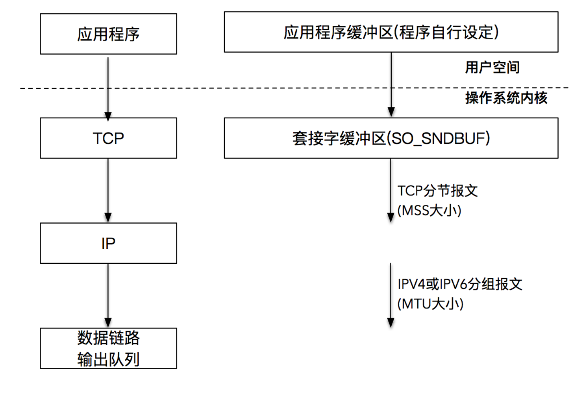
1.5.3 读取数据
套接字描述本身和本地文件描述符并无区别，在 UNIX 的世界里万物都是文件，这就意味着可以将套接字描述符传递给那些原先为处理本地文件而设计的函数。这些函数包括 read 和 write 交换数据的函数。
read 函数
函数的原型如下：
ssize_t read (int socketfd, void *buffer, size_t size)函数要求操作系统内核从套接字描述字 socketfd 读取最多多少个字节（size），并将结果存储到 buffer 中
返回值告诉我们实际读取的字节数目，也有一些特殊情况，如果返回值为 0，表示 EOF（end-of-file），这在网络中表示对端发送了 FIN 包，要处理断连的情况；如果返回值为 -1，表示出错。如果是非阻塞 I/O，情况会略有不同。
如果我们想让应用程序每次都读到 size 个字节，就需要编写下面的函数，不断地循环读取：
/* 从 socketfd 描述字中读取 "size" 个字节. */
ssize_t readn(int fd, void *vptr, size_t size)
{
size_t nleft;
ssize_t nread;
char *ptr;
ptr = vptr;
nleft = size;
while (nleft > 0) {
if ( (nread = read(fd, ptr, nleft)) < 0) {
if (errno == EINTR)
nread = 0; /* 这里需要再次调用 read */
else
return(-1);
} else if (nread == 0)
break; /* EOF(End of File) 表示套接字关闭 */
nleft -= nread;
ptr += nread;
}
return(n - nleft); /* 返回的是实际读取的字节数 */
}解释：
- 11-25 行的循环条件表示的是，在没读满 size 个字节之前，一直都要循环下去
- 13-14 行表示的是非阻塞 I/O 的情况下，没有数据可以读，需要继续调用 read
- 17-18 行表示读到对方发出的 FIN 包，表现形式是 EOF，此时需要关闭套接字
- 21-22 行，需要读取的字符数减少，缓存指针往下移动
- 24 行是在读取 EOF 跳出循环后，返回实际读取的字符数
缓冲区如此重要，可不可以无限增大缓冲区，这样不就可以提高应用程序的吞吐量了么？
不行，write函数发送数据只是将数据发送到内核缓冲区，而什么时候发送由内核决定。内核缓冲区总是充满数据时会产生粘包问题，同时网络的传输大小MTU也会限制每次发送的大小，最后由于数据堵塞需要消耗大量内存资源，资源使用效率不高。
一段数据流从应用程序发送端，一直到应用程序接收端，总共经过了多少次拷贝？
用户缓冲区 -> 内核缓冲区 -> 网卡 -> 对端网卡 -> 内核缓冲区 -> 用户缓冲区
实验：
tcp_server.c
#include "lib/common.h"
void read_data(int sockfd) {
ssize_t n;
char buf[1024];
int time = 0;
for (;;) {
fprintf(stdout, "block in read\n");
if ((n = readn(sockfd, buf, 1024)) == 0)
return;
time++;
fprintf(stdout, "1K read for %d \n", time);
usleep(1000);
}
}
int main(int argc, char **argv) {
int listenfd, connfd;
socklen_t clilen;
struct sockaddr_in cliaddr, servaddr;
listenfd = socket(AF_INET, SOCK_STREAM, 0);
bzero(&servaddr, sizeof(servaddr));
servaddr.sin_family = AF_INET;
servaddr.sin_addr.s_addr = htonl(INADDR_ANY);
servaddr.sin_port = htons(12345);
/* bind到本地地址，端口为12345 */
bind(listenfd, (struct sockaddr *) &servaddr, sizeof(servaddr));
/* listen的backlog为1024 */
listen(listenfd, 1024);
/* 循环处理用户请求 */
for (;;) {
clilen = sizeof(cliaddr);
connfd = accept(listenfd, (struct sockaddr *) &cliaddr, &clilen);
read_data(connfd); /* 读取数据 */
close(connfd); /* 关闭连接套接字，注意不是监听套接字*/
}
}解释：
- 6-17 行先后创建了 socket 套接字，bind 到对应地址和端口，并开始调用 listen 接口监听
- 20-25 行循环等待连接，通过 accept 获取实际的连接，并开始读取数据
- 28-42 行实际每次读取 1K 数据，之后休眠 1 秒，用来模拟服务器端处理时延
tcp_client.c
#include "lib/common.h"
# define MESSAGE_SIZE 102400
void send_data(int sockfd) {
char *query;
query = malloc(MESSAGE_SIZE + 1);
for (int i = 0; i < MESSAGE_SIZE; i++) {
query[i] = 'a';
}
query[MESSAGE_SIZE] = '\0';
const char *cp;
cp = query;
size_t remaining = strlen(query);
while (remaining) {
int n_written = send(sockfd, cp, remaining, 0);
fprintf(stdout, "send into buffer %ld \n", n_written);
if (n_written <= 0) {
error(1, errno, "send failed");
return;
}
remaining -= n_written;
cp += n_written;
}
return;
}
int main(int argc, char **argv) {
int sockfd;
struct sockaddr_in servaddr;
if (argc != 2)
error(1, 0, "usage: tcpclient <IPaddress>");
sockfd = socket(AF_INET, SOCK_STREAM, 0);
bzero(&servaddr, sizeof(servaddr));
servaddr.sin_family = AF_INET;
servaddr.sin_port = htons(12345);
inet_pton(AF_INET, argv[1], &servaddr.sin_addr);
int connect_rt = connect(sockfd, (struct sockaddr *) &servaddr, sizeof(servaddr));
if (connect_rt < 0) {
error(1, errno, "connect failed ");
}
send_data(sockfd);
exit(0);
}解释：
- 9-15 行先后创建了 socket 套接字，调用 connect 向对应服务器端发起连接请求
- 16 行在连接建立成功后，调用 send_data 发送数据
- 23-28 行初始化了一个长度为 MESSAGE_SIZE 的字符串流
- 33-42 行调用 send 函数将 MESSAGE_SIZE 长度的字符串流发送出去
编译运行：
客户端程序发送了一个很大的字节流，程序运行起来之后，我们会看到服务端不断地在屏幕上打印出读取字节流的过程
而客户端直到最后所有的字节流发送完毕才打印出下面的一句话，说明在此之前 send 函数一直都是阻塞的，也就是说阻塞式套接字最终发送返回的实际写入字节数和请求字节数是相等的
注意：发送成功仅仅表示的是数据被拷贝到了发送缓冲区中，并不意味着连接对端已经收到所有的数据
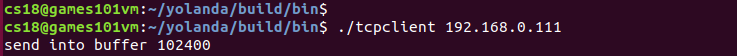
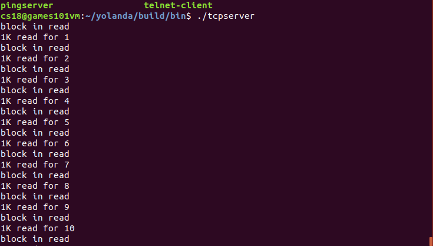
1.6 UDP编程
TCP和UDP相比有什么差异呢？
UDP 是一种数据报协议，而 TCP 是一种面向连接的数据流协议。
TCP 是一个面向连接的协议，TCP 在 IP 报文的基础上，增加了诸如重传、确认、有序传输、拥塞控制等能力，通信的双方是在一个确定的上下文中工作的。
而 UDP 则不同，UDP 没有这样一个确定的上下文，它是一个不可靠的通信协议，没有重传和确认，没有有序控制，也没有拥塞控制。UDP 不保证报文的有效传递，不保证报文的有序，也就是说使用 UDP 的时候，我们需要做好丢包、重传、报文组装等工作。
UDP 建立连接
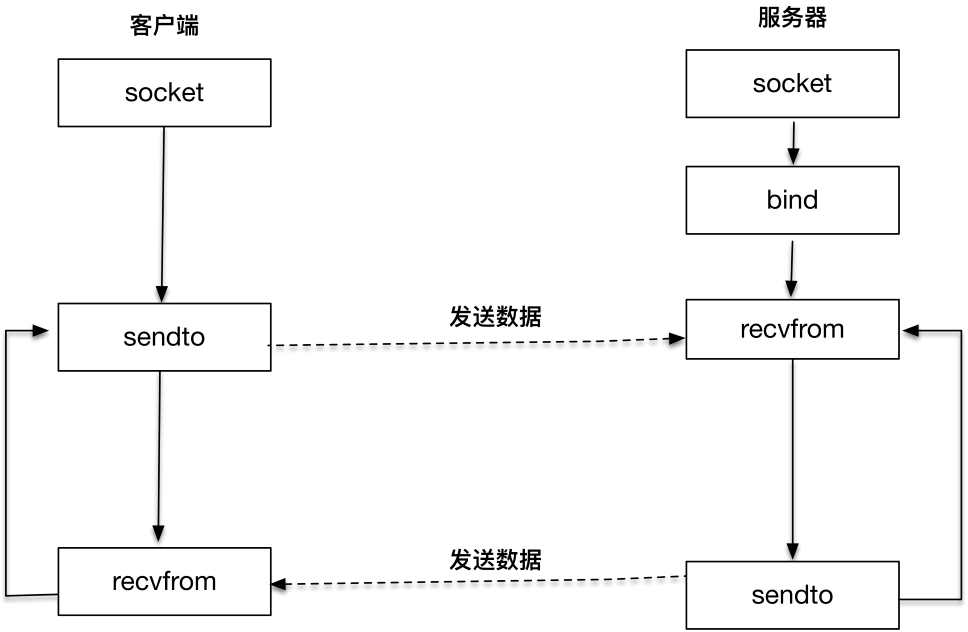
服务器端创建 UDP 套接字之后，绑定到本地端口，调用 recvfrom 函数等待客户端的报文发送；客户端创建套接字之后，调用 sendto 函数往目标地址和端口发送 UDP 报文，然后客户端和服务器端进入互相应答过程。
recvfrom 和 sendto 是 UDP 用来接收和发送报文的两个主要函数：
#include <sys/socket.h>
ssize_t recvfrom(int sockfd, void *buff, size_t nbytes, int flags,
struct sockaddr *from, socklen_t *addrlen);
ssize_t sendto(int sockfd, const void *buff, size_t nbytes, int flags,
const struct sockaddr *to, socklen_t *addrlen); recvfrom 函数：
sockfd 是本地创建的套接字描述符
buff 指向本地的缓存
nbytes 表示最大接收数据字节
flags 是和 I/O 相关的参数，这里我们还用不到，设置为 0
后面两个参数 from 和 addrlen，实际上是返回对端发送方的地址和端口等信息
这和 TCP 非常不一样，TCP 是通过 accept 函数拿到的描述字信息来决定对端的信息。而UDP 报文每次接收都会获取对端的信息，报文和报文之间是没有上下文的。
函数返回值告诉我们实际接收的字节数。
sendto 函数：
sockfd 是本地创建的套接字描述符
buff 指向发送的缓存
nbytes 表示发送字节数
flags 依旧设置为 0
to 和 addrlen表示发送的对端地址和端口等信息。
函数的返回值告诉我们实际接收的字节数。
实验：
udp_server.c
#include "lib/common.h"
static int count;
static void recvfrom_int(int signo) {
printf("\nreceived %d datagrams\n", count);
exit(0);
}
int main(int argc, char **argv) {
int socket_fd;
socket_fd = socket(AF_INET, SOCK_DGRAM, 0);
struct sockaddr_in server_addr;
bzero(&server_addr, sizeof(server_addr));
server_addr.sin_family = AF_INET;
server_addr.sin_addr.s_addr = htonl(INADDR_ANY);
server_addr.sin_port = htons(SERV_PORT);
bind(socket_fd, (struct sockaddr *) &server_addr, sizeof(server_addr));
socklen_t client_len;
char message[MAXLINE];
count = 0;
signal(SIGINT, recvfrom_int);
struct sockaddr_in client_addr;
client_len = sizeof(client_addr);
for (;;) {
int n = recvfrom(socket_fd, message, MAXLINE, 0, (struct sockaddr *) &client_addr, &client_len);
message[n] = 0;
printf("received %d bytes: %s\n", n, message);
char send_line[MAXLINE];
sprintf(send_line, "Hi, %s", message);
sendto(socket_fd, send_line, strlen(send_line), 0, (struct sockaddr *) &client_addr, client_len);
count++;
}
}解释：
12～13 行，首先创建一个套接字，注意这里的套接字类型是
SOCK_DGRAM，表示的是 UDP 数据报。15～21 行和 TCP 服务器端类似，绑定数据报套接字到本地的一个端口上。
27 行为该服务器创建了一个信号处理函数，以便在响应“Ctrl+C”退出时，打印出收到的报文总数。
31～42 行是该服务器端的主体，通过调用 recvfrom 函数获取客户端发送的报文，之后我们对收到的报文进行重新改造，加上“Hi”的前缀，再通过 sendto 函数发送给客户端对端。
udp_client.c
在这个例子中，从标准输入中读取输入的字符串后，发送给服务端，并且把服务端经过处理的报文打印到标准输出上。
#include "lib/common.h"
# define MAXLINE 4096
int main(int argc, char **argv) {
if (argc != 2) {
error(1, 0, "usage: udpclient <IPaddress>");
}
int socket_fd;
socket_fd = socket(AF_INET, SOCK_DGRAM, 0);
struct sockaddr_in server_addr;
bzero(&server_addr, sizeof(server_addr));
server_addr.sin_family = AF_INET;
server_addr.sin_port = htons(SERV_PORT);
inet_pton(AF_INET, argv[1], &server_addr.sin_addr);
socklen_t server_len = sizeof(server_addr);
struct sockaddr *reply_addr;
reply_addr = malloc(server_len);
char send_line[MAXLINE], recv_line[MAXLINE + 1];
socklen_t len;
int n;
while (fgets(send_line, MAXLINE, stdin) != NULL) {
int i = strlen(send_line);
if (send_line[i - 1] == '\n') {
send_line[i - 1] = 0;
}
printf("now sending %s\n", send_line);
size_t rt = sendto(socket_fd, send_line, strlen(send_line), 0, (struct sockaddr *) &server_addr, server_len);
if (rt < 0) {
error(1, errno, "send failed ");
}
printf("send bytes: %zu \n", rt);
len = 0;
n = recvfrom(socket_fd, recv_line, MAXLINE, 0, reply_addr, &len);
if (n < 0)
error(1, errno, "recvfrom failed");
recv_line[n] = 0;
fputs(recv_line, stdout);
fputs("\n", stdout);
}
exit(0);
}解释：
10～11 行创建一个类型为“SOCK_DGRAM”的套接字。
13～17 行，初始化目标服务器的地址和端口。
28～51 行为程序主体，从标准输入中读取的字符进行处理后，调用 sendto 函数发送给目标服务器端，然后再次调用 recvfrom 函数接收目标服务器发送过来的新报文，并将其打印到标准输出上。
运行：
场景一：只运行客户端

只运行客户端，程序会一直阻塞在 recvfrom 上
如果不开启服务端，TCP 客户端的 connect 函数会直接返回Connection refused报错信息。而在 UDP 程序里，则会一直阻塞在这里。
场景二：先开启服务端，再开启客户端
先开启服务端在端口侦听，然后再开启客户端：
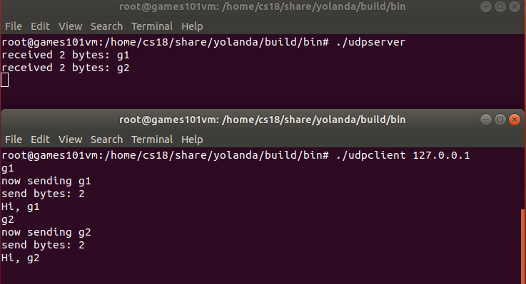
在客户端一次输入 g1、g2，服务器端在屏幕上打印出收到的字符，并且可以看到，客户端也收到了服务端的回应：“Hi, g1”和“Hi,g2”
场景三: 开启服务端，再一次开启两个客户端
在服务端开启之后，依次开启两个客户端，并发送报文：
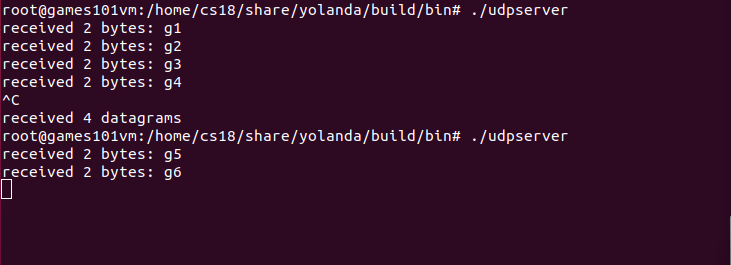
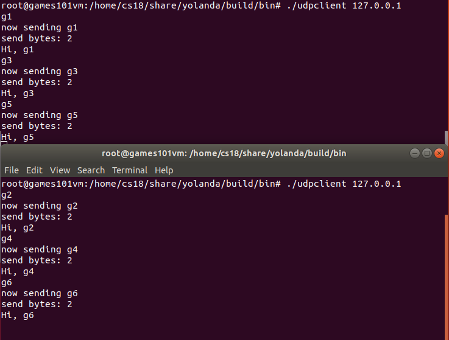
两个客户端发送的报文，依次都被服务端收到，并且客户端也可以收到服务端处理之后的报文。如果此时把服务器端进程杀死，就可以看到信号函数在进程退出之前，打印出服务器端接收到的报文个数。
之后再重启服务器端进程，并使用客户端 1 和客户端 2 继续发送新的报文，服务器端可以继续收到客户端的报文。（这在 TCP 里是不可以的，TCP 断联之后必须重新连接才可以发送报文信息）但是 UDP 报文的无连接的特点，可以在 UDP 服务器重启之后，继续进行报文的发送，这就是 UDP 报文“无上下文”的最好说明。
在第一个场景中
recvfrom一直处于阻塞状态中，这是非常不合理的，这种情形应该怎么处理呢？一直阻塞会导致程序无法正常退出，可以使用接收超时、IO多路复用的超时机制。
UDP 是请求 - 应答模式的，那么请求中的 UDP 报文最大可以是多大呢？
IP和UDP头中都有16bit的长度字段，最长65535字节，去掉头部长度得到UDP数据净荷长度：65535-20-8=65507字节
1.7 本地套接字
实际上本地套接字是 IPC，也就是本地进程间通信的一种实现方式。除了本地套接字以外，其它技术，诸如管道、共享消息队列等也是进程间通信的常用方法，但因为本地套接字开发便捷，接受度高，所以普遍适用于在同一台主机上进程间通信的各种场景。
1.7.0 例子
在 Kubernetes 和 Docker 的技术体系中，有很多优秀的设计，比如 Kubernetes 的 CRI Container Runtime Interface，其思想是将 Kubernetes 的主要逻辑和 Container Runtime 的实现解耦。
我们可以通过 netstat 命令查看 Linux 系统内的本地套接字状况，下面这张图列出了路径为 /var/run/dockershim.socket 的 stream 类型的本地套接字，可以清楚地看到开启这个套接字的进程为 kubelet。kubelet 是 Kubernetes 的一个组件，这个组件负责将控制器和调度器的命令转化为单机上的容器实例。为了实现和容器运行时的解耦，kubelet 设计了基于本地套接字的客户端 - 服务器 GRPC 调用。

列表里还有 docker-containerd.sock 等其他本地套接字，Docker 其实也是大量使用了本地套接字技术来构建。如果我们在 /var/run 目录下将会看到 docker 使用的本地套接字描述符:
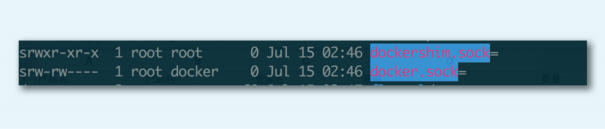
1.7.1 本地套接字概述
本地套接字一般也叫做 UNIX 域套接字，最新的规范已经改叫本地套接字。
本地套接字是一种特殊类型的套接字，和 TCP/UDP 套接字不同。TCP/UDP 即使在本地地址通信，也要走系统网络协议栈，而本地套接字，严格意义上说提供了一种单主机跨进程间调用的手段，减少了协议栈实现的复杂度，效率比 TCP/UDP 套接字都要高许多。类似的 IPC 机制还有 UNIX 管道、共享内存和 RPC 调用等。
比如 X Window 实现，如果发现是本地连接，就会走本地套接字，工作效率非常高。
1.7.2 本地字节流套接字
服务器端：在这个例子中，服务器程序打开本地套接字后，接收客户端发送来的字节流，并往客户端回送了新的字节流。
#include "lib/common.h"
int main(int argc, char **argv) {
if (argc != 2) {
error(1, 0, "usage: unixstreamserver <local_path>");
}
int listenfd, connfd;
socklen_t clilen;
struct sockaddr_un cliaddr, servaddr;
listenfd = socket(AF_LOCAL, SOCK_STREAM, 0);
if (listenfd < 0) {
error(1, errno, "socket create failed");
}
char *local_path = argv[1];
unlink(local_path);
bzero(&servaddr, sizeof(servaddr));
servaddr.sun_family = AF_LOCAL;
strcpy(servaddr.sun_path, local_path);
if (bind(listenfd, (struct sockaddr *) &servaddr, sizeof(servaddr)) < 0) {
error(1, errno, "bind failed");
}
if (listen(listenfd, LISTENQ) < 0) {
error(1, errno, "listen failed");
}
clilen = sizeof(cliaddr);
if ((connfd = accept(listenfd, (struct sockaddr *) &cliaddr, &clilen)) < 0) {
if (errno == EINTR)
error(1, errno, "accept failed"); /* back to for() */
else
error(1, errno, "accept failed");
}
char buf[BUFFER_SIZE];
while (1) {
bzero(buf, sizeof(buf));
if (read(connfd, buf, BUFFER_SIZE) == 0) {
printf("client quit");
break;
}
printf("Receive: %s", buf);
char send_line[MAXLINE];
sprintf(send_line, "Hi, %s", buf);
int nbytes = sizeof(send_line);
if (write(connfd, send_line, nbytes) != nbytes)
error(1, errno, "write error");
}
close(listenfd);
close(connfd);
exit(0);
}解释：
- 第 12～15 行非常关键，这里创建的套接字类型，注意是 AF_LOCAL，并且使用字节流格式。
- 第 17～21 行创建了一个本地地址，这里的本地地址和 IPv4、IPv6 地址可以对应，数据类型为 sockaddr_un，这个数据类型中的 sun_family 需要填写为 AF_LOCAL，最为关键的是需要对 sun_path 设置一个本地文件路径。我们这里还做了一个 unlink 操作，以便把存在的文件删除掉，这样可以保持幂等性。
- 第 23～29 行，分别执行 bind 和 listen 操作，这样就监听在一个本地文件路径标识的套接字上，这和普通的 TCP 服务端程序没什么区别。
- 第 41～56 行，使用 read 和 write 函数从套接字中按照字节流的方式读取和发送数据。
关于本地文件路径，需要明确一点，它必须是绝对路径，这样的话，编写好的程序可以在任何目录里被启动和管理。如果是相对路径，为了保持同样的目的，这个程序的启动路径就必须固定，这样一来，对程序的管理反而是一个很大的负担。
本地文件，必须是一个文件，不能是一个目录。如果文件不存在，后面 bind 操作时会自动创建这个文件。
在 Linux 下，任何文件操作都有权限的概念，应用程序启动时也有应用属主。
客户端程序
#include "lib/common.h"
int main(int argc, char **argv) {
if (argc != 2) {
error(1, 0, "usage: unixstreamclient <local_path>");
}
int sockfd;
struct sockaddr_un servaddr;
sockfd = socket(AF_LOCAL, SOCK_STREAM, 0);
if (sockfd < 0) {
error(1, errno, "create socket failed");
}
bzero(&servaddr, sizeof(servaddr));
servaddr.sun_family = AF_LOCAL;
strcpy(servaddr.sun_path, argv[1]);
if (connect(sockfd, (struct sockaddr *) &servaddr, sizeof(servaddr)) < 0) {
error(1, errno, "connect failed");
}
char send_line[MAXLINE];
bzero(send_line, MAXLINE);
char recv_line[MAXLINE];
while (fgets(send_line, MAXLINE, stdin) != NULL) {
int nbytes = sizeof(send_line);
if (write(sockfd, send_line, nbytes) != nbytes)
error(1, errno, "write error");
if (read(sockfd, recv_line, MAXLINE) == 0)
error(1, errno, "server terminated prematurely");
fputs(recv_line, stdout);
}
exit(0);
}解释：
11～14 行创建了一个本地套接字，和前面服务器端程序一样，用的也是字节流类型 SOCK_STREAM。
16～18 行初始化目标服务器端的地址。我们知道在 TCP 编程中，使用的是服务器的 IP 地址和端口作为目标，在本地套接字中则使用文件路径作为目标标识，sun_path 这个字段标识的是目标文件路径，所以这里需要对 sun_path 进行初始化。
20 行和 TCP 客户端一样，发起对目标套接字的 connect 调用，不过由于是本地套接字，并不会有三次握手。
28～38 行从标准输入中读取字符串，向服务器端发送，之后将服务器端传输过来的字符打印到标准输出上。
总体上，我们可以看到，本地字节流套接字和 TCP 服务器端、客户端编程最大的差异就是套接字类型的不同。本地字节流套接字识别服务器不再通过 IP 地址和端口，而是通过本地文件。
2. 网络编程实战
2.1 工具使用
ping
ping这个命名来自于声呐探测，在网络上用来完成对网络连通性的探测。ping 基于 ICMP协议 开发。
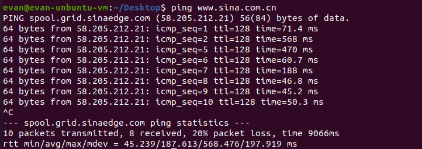
在上面的例子中使用 ping 命令探测了和新浪网的网络连通性。可以看到，每次显示是按照 sequence 序列号排序显示的，一并显示的，也包括 TTL，反映了两个 IP 地址之间传输的时间。最后还显示了 ping 命令的统计信息，如最小时间、平均时间等。
ifconfig
用来显示当前系统中的所有网络设备（网卡列表）
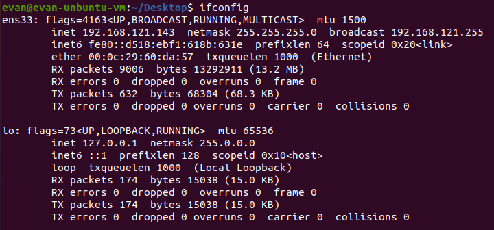
第一行：**<UP,BROADCAST,RUNNING,MULTICAST>：网络设备的状态标识**
UP：网卡开启状态BROADCAST：网卡有广播地址，可发送广播RUNNING：网线处于连接状态MULTICAST：表示网卡可以发送多播包
mtu 1500：最大传输单元 MTU 为 1500，表示的是链路层包的大小，这是以太网的默认值，规定连 MAC 头带正文合起来，不允许超过 1500 个字节。如果放不下就需要分片来传输。
第二行：inet 192.168.121.143 netmask 255.255.255.0 broadcast 192.168.121.255
网卡的IP地址、子网掩码、广播地址
第三行：IPV6配置信息
第四行：**ether 52:00:74:f8:9f:56 txqueuelen 0 (Ethernet)**：网卡的MAC地址
ether：连接类型为以太网txqueuelen：传输队列的长度
第五六行：网卡接受数据包的统计信息和接受错误的统计信息
第七八行：网卡发送数据包的统计信息和发送错误的统计信息
netstat
netstat 可以帮助我们了解当前的网络连接状况，比如想知道当前所有的连接详情，就可以使用下面这行命令：
netstat -alepn可能的结果为：
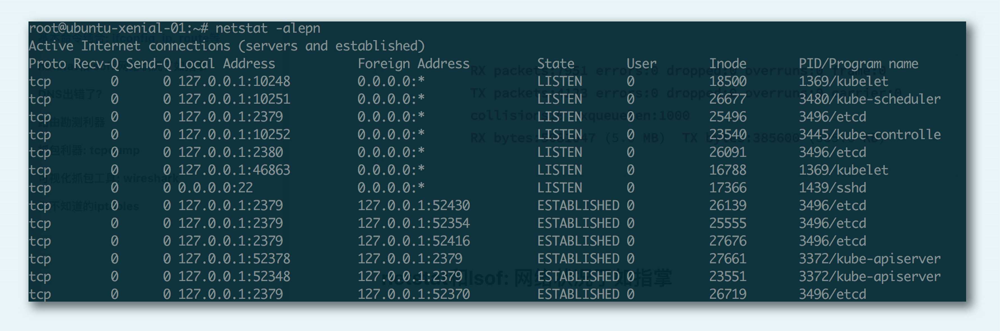
netstat 会把所有 IPv4 形态的 TCP，IPV6 形态的 TCP、UDP 以及 UNIX 域的套接字都显示出来。
对于 TCP 类型来说，最大的好处是可以清楚地看到一条 TCP 连接的四元组（源地址、源端口、目的地地址和目的端口）。
例如这里的一条信息：
tcp 0 0 127.0.0.1:2379 127.0.0.1:52464 ESTABLISHED 0 27710 3496/etcd表达的意思是本地 127.0.0.1 的端口 52464 连上本地 127.0.0.1 的端口 2379，状态为 ESTABLISHED，本地进程为 etcd，进程为 3496。
可以很方便地知道，在某个时候是不是有很多 TIME_WAIT 的 TCP 连接，导致端口号被占用光，以致新的连接分配不了。
也可以只对 UNIX 套接字进行筛查：
netstat Socket -x -alepnunix 3 [ ] STREAM CONNECTED 23209 1400/dockerd /var/run/docker.sock这是 Docker 在本地套接字的监听路径。*/var/run/docker.sock* 是本地套接字监听地址，dockerd 是进程名称，1400 是进程号。
lsof
lsof 的常见用途之一是找出在指定的 IP 地址或者端口上打开套接字的进程，而 netstat 则告诉我们 IP 地址和端口使用的情况，以及各个 TCP 连接的状态。Isof 和 netstst 可以结合起来一起使用。
可以通过 lsof 查看是谁打开了这个文件：
lsof /var/run/docker.sock下面这张图显示了是 dockerd 打开了这个本地文件套接字：
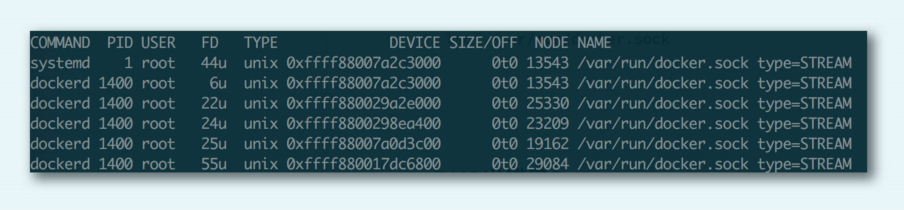
使用 lsof 找出正在使用该端口的进程，从而帮助定位问题。
lsof -i :8080
tcpdump
抓包工具，具有非常强大的过滤和匹配功能。
指定网卡：
tcpdump -i eth0指定来源：
tcpdump src host hostname我们再来一个复杂一点的例子。这里抓的包是 TCP，且端口是 80，包来自 IP 地址为 192.168.1.25 的主机地址。
tcpdump 'tcp and port 80 and src host 192.168.1.25' 如果我们对 TCP 协议非常熟悉，还可以写出这样的 tcpdump 命令：
tcpdump 'tcp and port 80 and tcp[13:1]&2 != 0'这里 tcp[13:1] 表示的是 TCP 头部开始处偏移为 13 的字节，如果这个值为 2，说明设置了 SYN 分节，当然，我们也可以设置成其他值来获取希望类型的分节。
tcpdump 在开启抓包的时候，会自动创建一个类型为 AF_PACKET 的网络套接口，并向系统内核注册。当网卡接收到一个网络报文之后，它会遍历系统中所有已经被注册的网络协议，包括其中已经注册了的 AF_PACKET 网络协议。系统内核接下来就会将网卡收到的报文发送给该协议的回调函数进行一次处理，回调函数可以把接收到的报文完完整整地复制一份，假装是自己接收到的报文，然后交给 tcpdump 程序，进行各种条件的过滤和判断，再对报文进行解析输出。
下面这张图显示的是 tcpdump 的输出格式：
未完待续